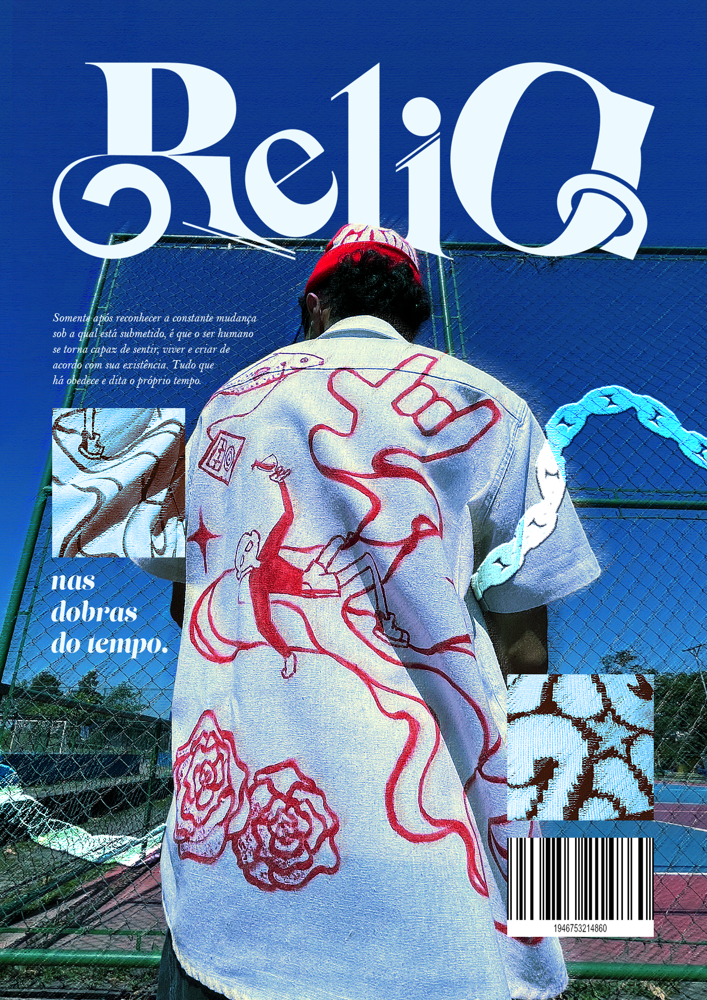

MEMÓRIA E SENTIMENTO
Baseada na atemporalidade da moda.
Inspirada na valorização de roupas antigas e no ato de herdar roupas presente na cultura das famílias brasileiras, a ReliQ surge com a intenção de ressaltar o passado das peças herdadas e o leque de possibilidades que se abre ao chegarem em novas mãos.